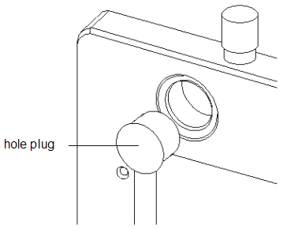

Hole plug
The hole plug (also known as coding plug) is a commercial part (part number 6960-0041) that is used for keying the device power supply position for the High Current Device Power Supply (HC-DPS). The black plastic hole plug (one per DPS location) is moved from the top side to bottom side of the stiffener to indicate a HC-DPS pogo block at that location. The hole plug prevents the user from docking a HC-DPS DUT board to a test head that does not have an HC-DPS pogo block installed, thereby damaging both the DUT board and the DUT interface.
Drawings E6980-96540 and E6980-550
For dimensions and detailed specifications refer to drawings E6980-96540 and E6980-96550 in Layout information: DUT board.
See Commercial parts for vendors.

Functional changes
- Introduced before SmarTest 6.3.2